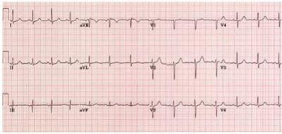
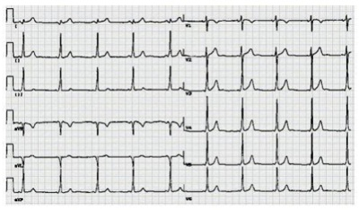

Mulher de 25 anos de idade, previamente hígida, sem comorbidades, apresenta quadro súbito de perda da consciência. Relata que estava em ortostase e, de repente, começou a sentir sudorese, mal-estar, tontura e desmaiou em seguida. Recobrou a consciência rapidamente, cerca de 1 minuto após. Glicemia capilar: 72 mg/dL. Exame físico: corada, hidratada, afebril; Glasgow: 15, pressão arterial: 100 x 60 mmHg, pulso: 68 bpm, SatO₂: 95%; ausculta cardíaca, pulmonar e exame neurológico: normais. Eletrocardiograma: normal. Em relação à principal hipótese diagnóstica, é correto afirmar:
Em várias situações clínicas, a perda de líquidos determina redução do volume do líquido extracelular, o que pode prejudicar a perfusão tecidual. Uma forma de identi car a hipovolemia é a constatação da presença de hipotensão postural, que consiste em uma queda da pressão arterial sistólica e diastólica quando, após estar deitado por 5 minutos, se assume a posição ortostática, respectivamente, de pelo menos
Homem, 58 anos, diabético, hipertenso, com diagnóstico aos 52 anos, desenvolveu insu ciência cardíaca há 2 anos. Em uso de insulina NPH e insulina regular; diurético de alça; inibidor da enzima conversora de angiotensina (IECA); antagonista dos canais de cálcio e betabloqueador. Queixa-se de turvamento visual, tontura e um episódio de perda de consciência ao levantar-se da posição deitado para a posição em pé. No exame físico, observa-se cacifo pré-tibial de 2+/4+; ritmo cardíaco regular; murmúrio vesicular presente e uniforme. O nível pressórico em decúbito foi 160/110 mmHg; e, após 3 minutos em pé, foi de 130/80 mmHg. Glicemia capilar no acolhimento de 180 mg/dL coincidindo com 1 hora após o café da manhã. Qual a hipótese diagnóstica mais provável para justificar a sintomatologia do paciente?
O tilt test é um exame habitualmente utilizado para confirmar o diagnóstico de que situação clínica?
Homem de 64 anos, com antecedentes de HAS e DM, em tratamento irregular com atenolol e metformina, sem pródromos, foi trazido ao pronto-socorro após queda em casa, seguida de perda total da consciência, quando estava em pé dentro de sua casa; tendo cado pálido e gelado no momento. Na chegada, apresentava-se em REG, hidratado, consciente, cooperativo, levemente taquipneico, acianótico, sem edemas, PA: 110x 90 mmHg, P: 135, FC = 156 bpm, perfusão periférica de 3 segundos. Pulmões livres, estase jugular presente, bulhas arrítmicas com hiperfonese de A2 e sopro sistólico 3+/6 em áreas mitral com ictus desviado para a esquerda. Em relação ao diagnóstico provável, assinale a alternativa correta.
Revisar: possível letra faltando em enunciado
Mulher, 17 anos de idade, sem antecedentes mórbidos, é trazida ao ambulatório com história de desmaios desde os 12 anos de idade. Já foram seis episódios nos últimos três meses; sempre desmaia em pé, em situação de estresse e ao doar sangue. Tem exame físico normal. Qual seria o exame de escolha para essa paciente?
Durante o plantão de pronto-socorro, quando você se depara com história de sincope, em adolescente hígido, qual exame complementar deve ser prioritário?
Mulher de 45 anos apresentou perda da consciência após se levantar e sair do ônibus em frente a um Pronto-Socorro. Recuperou completamente a consciência em 2 minutos e estava assintomática. Relatou uma sensação de escurecimento visual e tontura logo antes da queda. Era diabética e hipertensa há 20 anos, com tratamento irregular. Possuía doença renal crônica (estádio 3) e gastroparesia diabética. Fazia uso de hidroclorotiazida, atenolol e metformina. Ao exame físico, estava alerta, orientada, corada, hidratada. PA (deitada): 130 x 80mmHg, FC: 103bpm, FR: 17ipm, SpO2 98%, Glicemia Capilar: 168mg/dL. Os exames respiratório, cardiovascular e abdominal resultaram normais. O exame neurológico revelou hipoestesia em botas nos pés. Observe o eletrocardiograma a seguir: Sobre o caso descrito, assinale a alternativa CORRETA:

Paciente de 28 anos consultou-se por episódios de síncope que ocorriam desde os 15 anos, geralmente quando estava parada, em pé, em locais com temperatura elevada. Referiu pródromos de 10 segundos, com náuseas, calor, sudorese, visão borrada e, em seguida, perda de consciência. Havia relato de palidez e breves movimentos clônicos durante os desmaios. Após as quedas, recuperava a consciência, mas permanecia com fadiga por tempo prolongado, sem dor muscular ou cefaleia. O exame físico foi normal no momento da consulta. Qual a causa mais provável desses episódios?
São achados de alto risco em pacientes que tiveram síncope e indicam internação hospitalar imediata, EXCETO:
Paciente masculino, 59 anos, com história de infarto agudo do miocárdio há seis anos e em acompanhamento por insu ciência cardíaca, refere episódio súbito de perda de consciência quando estava deitado, sem pródromos e com recuperação em alguns segundos. Após esse episódio, manteve-se assintomático. O eletrocardiograma inicial não apresenta alterações isquêmicas agudas e os exames laboratoriais são normais. Qual a suspeita diagnóstica mais provável e qual exame tem maior probabilidade de esclarecer o diagnóstico?
Uma mulher de 25 anos de idade está em avaliação no pronto-socorro após episódio de desmaio, em um comício. A paciente refere ter sentido calor, náuseas e sudorese, sendo que após isso, acordou com amigos a socorrendo, os quais relatam que a jovem cou inconsciente por um breve período de tempo, acordou quase imediatamente e não apresentou confusão após o episódio. Não há história familiar de morte súbita e a jovem não faz uso contínuo de medicações. O exame físico é normal, com pressão arterial = 120 x 70 mmHg, sem hipotensão postural. O eletrocardiograma é normal. Assinale a alternativa que contém a conduta apropriada para o caso, neste momento:
Na avaliação de hipotensão ortostática em um paciente com história de síncope, a medida da pressão arterial e da frequência cardíaca deve ser feita:
A respeito da síncope: I. É uma perda transitória, autolimitada da consciência que se deve a um distúrbio global agudo do fluxo sanguíneo cerebral; II. O início é rápido, de breve duração, com recuperação espontânea e completa; III. Devem ser distinguidas da síncope outras causas da perda transitória da consciência, que incluem convulsões, hipoxemia, isquemia vertebrobasilar e hipoglicemia; IV. As causas da síncope podem ser divididas em três categorias: síncope reflexa também chamada de vasovagal, hipotensão ortostática e cardíaca.; V. A síncope cardíaca pode-se dever a arritmias ou doenças cardíacas estruturais que provocam uma diminuição do débito cardíaco.
Síncopes são situações clínicas que cursam de uma maneira geral, com interrupção do uxo sanguíneo cerebral, de início rápido e curta duração com perda transitória da consciência. Sobre este quadro, assinale a afirmativa ERRADA:
Paciente do sexo masculino, 58 anos, com antecedente de hipertensão arterial sistêmica e diabetes mellitus, em uso de enalapril, hidroclorotiazida e metformina, vem apresentando episódios de perda de consciência com períodos intercrise cada vez menores. Há relatos de ser visto vígil, e, subitamente, apresentou perda total da consciência, sem pródromos, caindo da própria altura sem defesa. Ao recobrar o nível neurológico, alguns segundos após o evento, costuma apresentar- se discretamente confuso e desorientado. Assinale a alternativa que contempla a hipótese diagnóstica CORRETA:
Uma interna do curso de medicina, 24 anos de idade, apresentou episódio de síncope precedido por náuseas e turvação visual. Conta que este é o terceiro episódio desde que começou o internato. Todos os episódios ocorreram na enfermaria (1° ao sentir cheiro de melena; 2° ao realizar punção venosa profunda; 3° ao retirar bainha femoral após paciente ter sido submetido a cateterismo cardíaco). Qual a provável causa da síncope neste caso?
Paciente com síndrome de taquicardia ortostática postural, ao assumir a posição ortostática, além das alterações específicas relacionados ao aumento da frequência cardíaca, caracteristicamente, também irão apresentar.
Paciente do sexo masculino de 78 anos apresenta-se à clínica se queixando de desmaio toda vez que se barbeia com lâmina reta. Os sintomas vêm ocorrendo nos últimos 2 meses. Ocasionalmente, também desmaia quando usa um colarinho apertado. A perda de consciência é breve, não tem pródomo associado e, depois, sente-se bem. A história patológica progressa é significativa para hipertensão e hipercolesterolemia. A única medicação que faz uso é hidroclorotiazida. Ao exame físico, os sinais vitais estão normais, assim como o exame cardíaco, com exceção de presença de 4ª bulha cardíaca. Qual das opções a seguir constitui o próximo teste diagnóstico mais adequado?
Homem, 75 anos, com histórico de infarto do miocárdio prévio, sentiu palpitações enquanto dirigia e apresentou uma síncope; ao retomar à consciência, seu carro estava caído em uma vala sem que ele se lembrasse exatamente o que havia acontecido. Dentre as opções abaixo, a causa mais provável para a síncope é:
Ao avaliar um adulto de 41 anos com síncope, assinale qual dos achados fala a favor de síncope de bom prognóstico e NÃO indicaria necessidade de internação para avaliação adicional.
Considere as situações abaixo com relação ao paciente com síncope e correlacione a primeira coluna com a segunda: I. Hipersensibilidade do seio carotídeo; II. BAV total paroxístico. III. Síncope neurocardiogênica; IV. Estenose aórtica. ( ) Indicação de marca- passo definitivo; ( ) Marcador de mau prognóstico; ( ) Relacionada à movimentação do pescoço; ( ) Pode estar relacionada à punção venosa.
Em relação à Síncope, pode-se afirmar, EXCETO que
Diante de um episódio de síncope é indicação para internação e investigação complementar abrangente a ocorrência de:
Em qual das situações clínicas abaixo citadas, o teste da inclinação (Tilt-Test) está indicado?
Homem, 45 anos de idade, previamente saudável e assintomático, apresentou episódio sincopal durante a micção ,logo após acordar. Não houve liberação esfincteriana. Recuperou-se prontamente ao cair no chão. A conduta é:
Tratamento f armacológico da insuf iciência cardíaca com f ração de ejeção reduzida Paciente masculino, 73 anos, apresenta hipertensão arterial, dislipidemia e insu ciência cardíaca com disfunção sistólica. Veio a consulta de rotina na Unidade Básica de Saúde informando que fazia uso de carvedilol: 25 mg/dia, enalapril: 40 mg/dia, sinvastatina: 20 mg/dia, AAS: 100 mg/dia, espironolactona: 12,5 mg e furosemida: 40 mg/dia. Vem apresentando episódios de mal-estar, tontura, sudorese e sensação de desmaio em posição ortostática. Nega dispneia e dor torácica. Ao exame: Frequência Cardíaca: 70 bpm, PA sentado: 125 x 80 mmHg. PA em pé: 100 x 70 mmHg, ausculta cardiorrespiratória com murmúrio vesicular presente sem ruídos adventícios e bulhas em 2 tempos, ritmo regular e com sopro sistólico mitral +2/+6; jugulares colabadas. Qual a melhor conduta para o caso?
Em um paciente idoso com hipotensão arterial postural sintomática idiopática, qual medicamento poderá ser empregado?
Taís, 31 anos, apresentou perda da consciência há algumas semanas. Diabetes melitus desde os 8 anos. Há três meses apresentou glicemia de jejum de 150mg/dl, hemoglobina glicada (método HPLC) de 8,3; proteinúria (++). Seu médico sugeriu intensi cação das atividades aeróbicas e ajustou as doses de insulina para 40U de insulina NPH humana + 5U de insulina regular, antes do desjejum e 10U de NPH humana + 10U de insulina regular 30 minutos antes do jantar. Após algumas semanas, os níveis de glicemia de jejum passaram a variar entre 70 e 90 mg/dl e a média nunca ultrapassou 150mg/dl. Há três semanas, pela primeira vez na vida,apresentou palpitações, seguidas de perda da consciência. Recuperou-se rapidamente e foi levada à emergência, onde chegou acordada, lúcida, sem lesões traumáticas e com leves abalos clônicos faciais. Foi medicada com glicose intravenosa. Posteriormente teve 3 episódios de náuseas, sudorese, palpitação e borramento da visão, porém sem perda da consciência. Ganhou 3 kg nos últimos meses. Refere trabalhar muito por vezes não consegue almoçar, fazendo “lanche” e não tem condições de automonitorar. Tinha crises de hipoglicemia na infância. Nega tabagismo, etilismo ou uso de drogas ilícitas. Peso:72 kg. Sinais vitais: tax=36°C, PA=126x16 mmHg, FC=62 bpm, FR=15 bpm. Fundoscopia normal. Exame físico sem alterações. Exames laboratoriais: Hemoglobina: 15,3 g/dl; leucometria: 5.500 mm3 (diferencial normal), ureia 20 mg/dl, creatinina 1,0 mg/dl, glicemia de jejum 66mg/dl; colesterol total 160mg/dl, HDL 45 mg/dl, LDL 100mg/dl, triglicerídeos 120 mg/dl, hemoglobina glicada 8,0 %; EAS normal; microalbuminúria=42 mg/24 horas; cortisol sérico (60 min após teste da cortrosina) 25µ/dl. Em relação ao diagnóstico diferencial entre síncope e crise epilética, neste caso: ( VER IMAGEM)

Considere que uma paciente, com 60 anos de idade, tenha apresentado quadro de perda súbita da consciência precedida por acesso de tosse, tendo recobrado a consciência cerca de 1 minuto após a adoção de medidas de urgência. Considere ainda que, no exame físico, não tenha sido verificada nenhuma alteração, mas a revisão de seu histórico clínico revelou que era portadora de asma persistente grave. Nessa situação, a etiologia mais provável é síncope de tosse. Respostas: 1 12 23